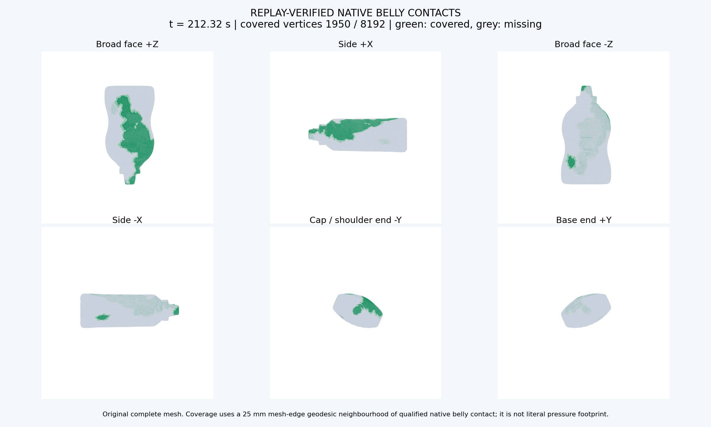
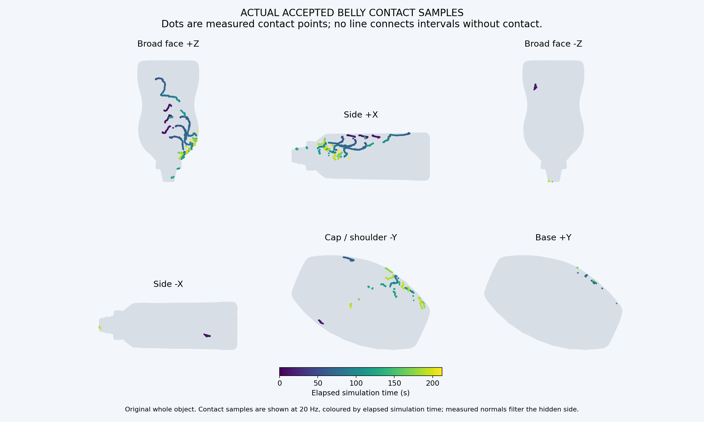
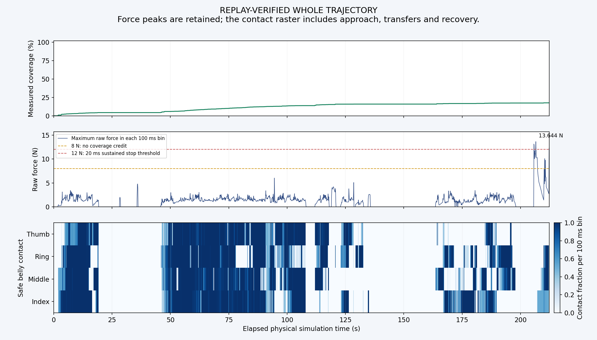

I04B-MCC · Mustard 对照运行
未完成整瓶覆盖：面积指标17.622%，1950/8192顶点，71/388目标。
B接收同源手掌目标和各指表面位置、法向，联合规划手掌与手指，其后使用同一MCC和保护。
从零覆盖、单一控制版本运行212.316秒；预算7000秒。终止：接触力连续超过12N，触发高力保护停止。
物体固定、零重力、Mustard 2.8倍缩放；MCC，不含DP。短时失联允许恢复。物理核验通过与遍历完成是两项独立结论。
这是离线规划仿真：求解时暂停仿真计时。运行墙钟耗时1228.4秒（不含后续独立核验/渲染），不是实时控制性能。
区间节选 206.00–212.32s · 1倍速
本片段内部无时间跳转；完整轨迹另附。
区间节选 60.00–69.95s · 1倍速
本片段内部无时间跳转；完整轨迹另附。
覆盖与剩余区域

| 区域 | 顶点 | 面积指标 |
|---|
| 宽面 +Z | 1400/2637 | 43.81% |
| 侧面 +X | 272/1128 | 20.02% |
| 宽面 −Z | 52/2005 | 3.36% |
| 侧面 −X | 34/1093 | 1.73% |
| 瓶盖/瓶肩端 −Y | 178/630 | 20.64% |
| 瓶底端 +Y | 14/699 | 0.77% |
25mm网格边测地邻域，仅合格的实际中央指腹接触计分；分母和规则与B一致。不是实际皮肤压痕面积。

各指参与
| 手指 | 全程合格接触率 | 实际切向材料运动 |
|---|
| 食指 | 42.82% | 0.458m |
| 中指 | 41.88% | 0.466m |
| 无名指 | 40.40% | 0.463m |
| 拇指 | 39.44% | 0.417m |
至少两指同时接触48.61%；至少三指35.42%；四指20.35%。
全程口径包含接近、换面和恢复。四指控制开启不代表四指始终接触。
离面、恢复和安全

换面计划5次；全手失联1056段，重触1055段，终点未恢复1段。
最长全手缺口（含初次接近）28.542秒。原始力峰13.6442N，≥8N共1.492秒，均不计覆盖。
上述原生段数包含2ms判定抖动，首次重触不等于恢复稳定多指接触。持续至少100ms的全手缺口为17段，至少1秒为7段；未把短暂失联直接判整轮失败。
106159个原生状态从唯一初态连续独立重放通过；全部已执行命令完成实态与上一参考双几何检查。